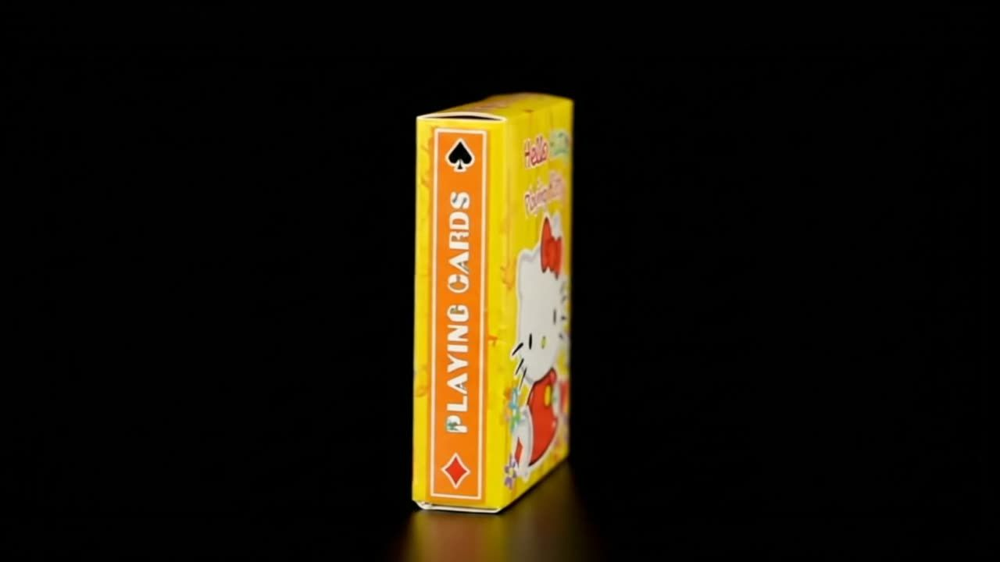

Memoria
El carrete La curaduría
Seleccionar y ordenar produce memoria.
Atlas / 01Diez semanas. Una misma pregunta.
Un carrete de fotos. Una voz en el espacio. Un reflejo sobre vidrio. Una pared.
¿Quién decide qué merece ser recordado?
MUFU / El trimestre compartido
El museo fue el tema común de diez semanas. MUFU nace de la sinergia entre las clases, sus docentes y los 12 estudiantes: las decisiones de una experiencia vuelven a aparecer, transformadas, en las demás.
Tema común · autoría colectiva · diez semanas
Erika Schnitter y Alejandro Pachón
La selección de imágenes personales descubre patrones. Esa pregunta por lo que merece conservarse regresa en la curaduría y en la cápsula.
Román Flórez
Los mismos objetos pueden contar historias distintas. La curaduría conecta las elecciones personales con la narrativa y la experiencia museal.
Viridiana Zavala
Aquí nació MUFU como un mundo compartido: pilares, relatos, recorridos, roles, pedestales, recursos digitales y sonido. Exhibir es una decisión colectiva.
Luis Miguel Caamaño
El puente narrativo, la cápsula y la aparición vuelven materiales las preguntas del trimestre: qué significa un objeto, para quién se guarda y quién decide lo que vemos.
Karla Paniagua
Las señales del presente, rastreadas hasta sus fuentes, sostienen dos mundos de 2046. Sus reglas de acceso a la memoria conectan el museo con la aparición y los prototipos.
Los 12 estudiantes
Los 12 estudiantes participan en todo el recorrido: seleccionan, curan, narran, diseñan mundos y construyen. El trabajo autónomo integra lo aprendido en dos prototipos, uno por futuro.
9 conexiones pedagógicas
Las fotos de un carrete y los objetos personales cambian de sentido cuando alguien decide cuáles conservar y junto a cuáles mostrarlos.
La curaduría de Román Flórez encuentra una escala espacial y colectiva en el museo de Viridiana Zavala: recorrido, relato, ambiente y roles.
Construir el ecosistema museal con Viridiana y los escenarios con Karla Paniagua permite preguntar qué leyes, tecnologías y formas de convivencia hacen posible una colección.
Las funciones narrativas estudiadas con Luis Miguel conectan con los objetos especulativos de los escenarios: una pieza puede activar una historia y hacer legible un sistema.
Los escenarios de Karla imaginan originales inaccesibles. La aparición construida con Luis Miguel permite experimentar esa misma condición: ver una imagen sin poder tocar el original.
Las preguntas iniciales de selección y curaduría regresan en la cápsula. Ya no elegimos solo para quien mira hoy, sino para una persona futura, incluso nosotros mismos.
El recorrido museal organiza lo que se encuentra el visitante. La luz de la aparición decide qué puede ver. Ambas experiencias hacen perceptible una decisión que suele quedar detrás de la escena.
Los mundos trabajados con Karla pasan al trabajo autónomo de los estudiantes: cada grupo elige y construye un objeto de su futuro.
La cápsula guarda objetos que tuvieron una vida. Los prototipos anticipan una que todavía no existe. Los estudiantes reúnen ambas maneras de relacionar museo y tiempo.
Los aportes y los nombres se recuperan del relato original. Estos cruces son una lectura pedagógica de sus relaciones, no el programa completo de las asignaturas ni un calendario semanal. Procedencia de esta lectura.
Lectura curatorial · relaciones conceptuales
Memoria, representación, poder y tiempo atraviesan el mismo objeto.
Memoria
Seleccionar y ordenar produce memoria.
Memoria
Una pieza recibe funciones y relatos.
Representación
Un objeto-mensaje pone en marcha un viaje.
Memoria
Dos mensajes de 1977: uno ficticio y otro enviado al espacio. Es una analogía, no una influencia demostrada.
Memoria
El mensaje espera a un destinatario distante.
Tiempo
La espera transforma a quien leerá.
Representación
Pepper: aparición teatral. Logan’s Run (1976): holografía real en el cine. Star Wars (1977): popularización del holograma como imagen del futuro. MUFU conecta técnica, cine e imaginario.
Representación
El taller reconstruye el aparato óptico.
Representación
Los originales se sustituyen por representaciones.
Representación
Las copias mantienen a salvo los originales.
Poder
La curaduría se convierte en una infraestructura de acceso.
Poder
Decidir qué se muestra también permite censurar.
Poder
Empresa y régimen son dos posibles titulares de la llave.
Poder
Quien controla la luz controla la aparición.
Representación
La aparición deja paso a la ausencia material.
Poder
El pacto de esperar limita el acceso de la propia institución.
Tiempo
1977 + 70 años = 2047; mismo día y minuto local.
Tiempo
Los escenarios se releen un año después de su fecha ficticia.
Memoria
Documentos y testimonios preservan historias vulnerables.
Memoria
La selección personal vuelve al final con el reloj cambiado.
Tiempo
Un futuro lector puede atribuir una historia nueva al mismo objeto.
02Diez semanas para aprender a mirar
Ocho módulos en secuencia. Las duraciones de cada módulo no están documentadas; esta infografía no los asigna a semanas concretas.
Erika Schnitter y Alejandro Pachón
Una colección revela a quien mira.
Elegir imágenes del teléfono y ponerlas juntas vuelve visible una manera de mirar. Selección, color, encuadre y proximidad producen un relato que no existía en cada foto aislada.
¿El patrón estaba en mis fotos o en la mirada de quien las ordena?
Román Flórez
El orden cambia el significado.
Los mismos objetos se agruparon de varias maneras y recibieron historias distintas, incluso inventadas. La procedencia y la ficción se vuelven dos lecturas que hay que distinguir.
¿Hasta dónde podemos inventar un pasado sin traicionar al objeto?
Viridiana Zavala
Exhibir es decidir.
Recorridos, pilares, pedestales, roles, recursos digitales y una canción construyeron el ambiente del museo. La visita involucra el cuerpo y depende de decisiones de otras personas.
¿Quién paga, organiza y sostiene ese mundo?
Luis Miguel Caamaño
Los objetos hacen avanzar una historia.
Matrix y el camino del héroe abrieron tres funciones: McGuffin, reliquia y talismán. El Disco de Oro llevó el problema al límite: comunicarse con alguien que no comparte idioma, cuerpo ni época.
¿Cómo diseñamos un mensaje para alguien sin nuestro contexto?
Karla Paniagua
Todo objeto supone un mundo.
Dos grupos rastrearon señales hasta sus fuentes y construyeron escenarios de transformación y colapso. En ambos, los originales dejan de verse y el público depende de reconstrucciones.
¿Quién tendrá la llave de la memoria?
Luis Miguel Caamaño
Elegir qué entregar al futuro.
Reconstruir 2005 permitió medir 21 años de cambio. Dar, recuperar, representar el presente y escribir una carta fueron las cuatro intenciones del ejercicio. El resultado final fue de 53 objetos, no una cuota uniforme.
¿Lo que elegimos seguirá significando algo en 2047?
Luis Miguel Caamaño
Quien maneja la luz decide qué aparece.
Construir el fantasma de Pepper convirtió la ausencia en una experiencia física: vidrio, luz y reflejo. La técnica victoriana conversa con los futuros donde solo se puede acceder a una representación.
¿Cuánto de lo que llamamos futuro es una técnica del pasado?
Trabajo autónomo · 12 estudiantes
Una reliquia sin pasado.
Cada grupo llevó a materia un objeto de su mundo. Mientras la cápsula retira objetos que tuvieron uso, el prototipo futuro empieza a significar antes de poder funcionar. El archivo no confirma cuáles fueron los dos prototipos finales.
¿Un prototipo sin uso es un objeto o la ilustración de una idea?
Una relación de origen
El relato del curso parte de la mitología de la memoria y la casa de las Musas para plantear que recordar también permite crear.
03Una cita con tres relojes
La fecha de apertura enlaza una misión espacial, un ejercicio de memoria y dos mundos imaginados.
Voyager 1 sale de la Tierra
12:56 UTC · 07:56 Panamá
Cita de apertura de MUFU
07:56 Panamá · UTC−5
El espejo del curso
Mirar hacia atrás para elegir qué enviar hacia adelante. Son distancias entre años: el cierre y la cita no ocurren el mismo día del calendario.
Un año para releer
Los escenarios se contrastan con un presente nuevo. La especulación plantea posibilidades; no se califica como una predicción científica.
2047 − 1977 = 70. Panamá usa UTC−5: 12:56 UTC equivale a 07:56. La ficha técnica de NASA precisa 12:56:01 UT; la cita de MUFU está definida al minuto. La fecha registrada de cierre es 04.09.2026, sin hora exacta. El calendario indica que se puede abrir; el archivo necesitará un acta para afirmar que se abrió.
04Dos mundos. La misma ausencia.
Ficciones de los estudiantes, 2046. El tercer término es MUFU, construido en 2026. Las conexiones se proponen como lectura curatorial.
Las comunidades poseen el relato.
Una empresa posee la infraestructura.
La historia oficial borra.
Las copias protegen lo que sobrevive.
En MUFU, una aparición permite ver.
La pared impide tocar.
| Pregunta | Transformación | Colapso | MUFU |
|---|---|---|---|
| Dónde están los originales | Bóvedas submarinas; acceso mediante robots SUBm. | Ocultos y trasladados por redes clandestinas. | Dos cajas tras una pared bajo la escalera. |
| Qué recibe el visitante | Reconstrucciones a través de lentes LNS. | Copias en Falsos Nodos; acceso restringido a originales. | Fotografías, fichas y doce apariciones registradas en video. |
| Quién controla el acceso | Empresa propietaria de lentes, bóvedas y membresías. | El régimen censura; los nodos seleccionan a su público. | Un pacto de cierre hasta el 5 de septiembre de 2047. |
| Silencio y voz | La ficticia Ley 1374 prohíbe las explicaciones habladas. | Las historias excluidas sobreviven como testimonio clandestino. | El relato de la función describe silencio y un golpe por cambio. |
| Qué falta comprobar | Las señales originales del ejercicio no están anexadas al repositorio. | Las señales originales del ejercicio no están anexadas al repositorio. | La placa sigue pendiente según el último registro; falta un parte actualizado. |
El curso rastreó señales del presente en siete categorías. Las fichas de esas señales no están anexadas al repositorio; el atlas no inventa noticias ni fuentes para completarlas.
05Quien maneja la luz.
Pepper hace visible la separación entre una cosa y su imagen. La luz cambia lo que vemos; el objeto de origen permanece.

Representación del efectoExperimento / reflejo
La aparición es visible.
La representación de Leia en Star Wars es un holograma de ficción. Su vínculo con Pepper es conceptual: presencia sin el cuerpo original.
La lámpara, los lentes, la censura, la pared.